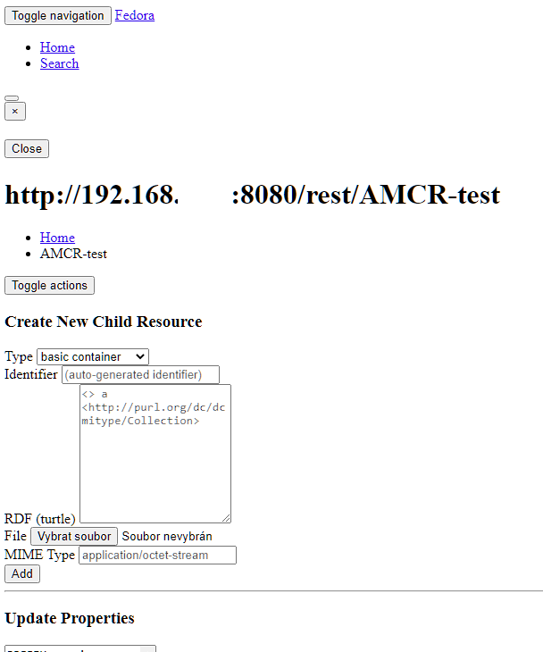

I was just trying some google fu for publically available fedora repos ( “inurl:fcrepo/rest” ) and I came across this https://sandbox.dams.library.ucdavis.edu/fcrepo/rest/item/ark:/87287/d76067 which demonstrates the issue. A quick look via the browser web developer tools shows that all static content is receiving a 403
FCREPO-3894 UI Broken for non fedoraAdmin users
| Type | Bug |
|---|---|
| Status | Closed |
| Resolution | Cannot Reproduce |
| Priority | High |
| Reporter | Dan Field |
| Assignee | Dan Field |
| Created | 2023-06-05 16:44 UTC |
| Updated | 2024-01-02 16:48 UTC |
| Resolved | 2024-01-02 16:48 UTC |
| Labels | html-ui |
| Addressed by | FCREPO-3900 Create a new external user interface for Fedora |
Description
David Novak reported that non fedoraAdmin users experiernce a broken UI. Not sure on the detail. Will expand ticket after researching
Attachments
- image-20230605-164717.png, 53095 bytes, added by Dan Field on 2023-06-05
Comments (3)
Dan Field, 2023-06-07 13:12 UTC
Dan Field, 2024-01-02 16:48 UTC
I have been unable to recreate this issue with an authenticated fedoraUser. In the case of the ucdavis example I found on the web, the repository is displaying content to unauthenticated users. That is not the normal configuration for fedora and I don’t see this as a bug, but a local configuration issue. I’m going to close this for now but we can re-open it if it pops up again before the UI-rework gets underway
